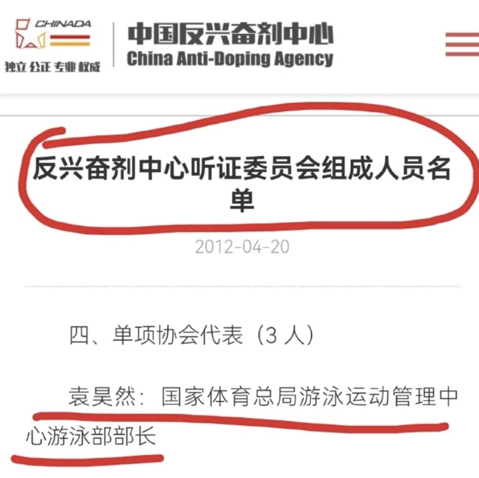
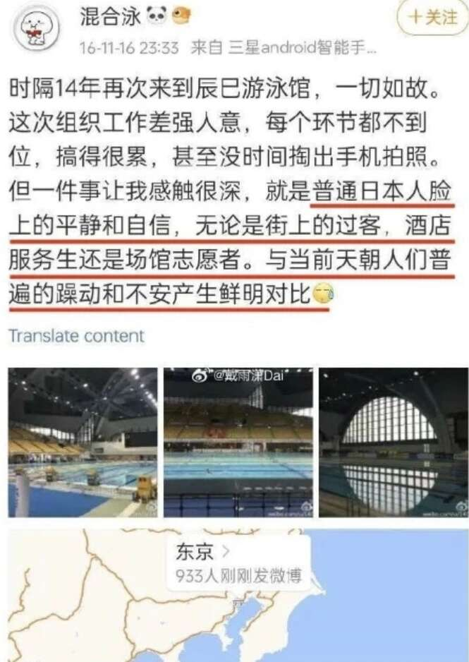
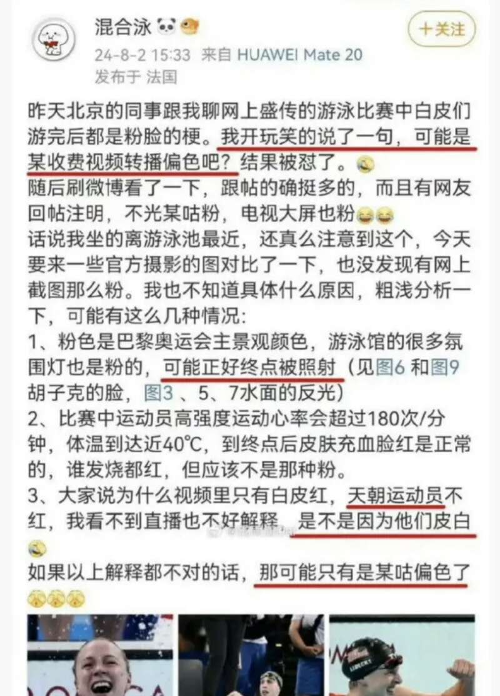
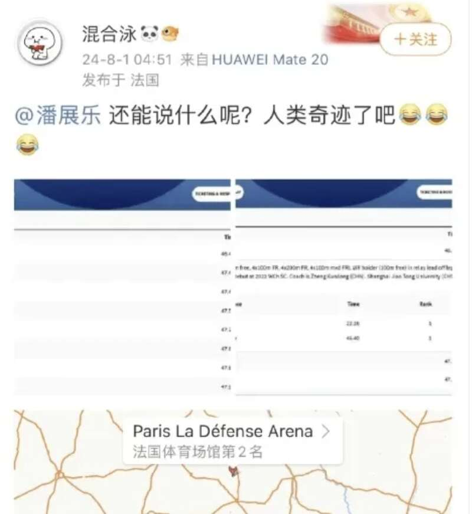
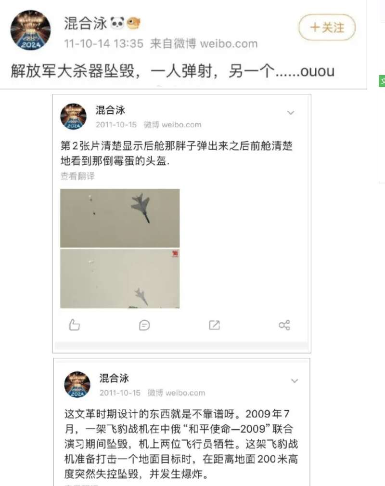
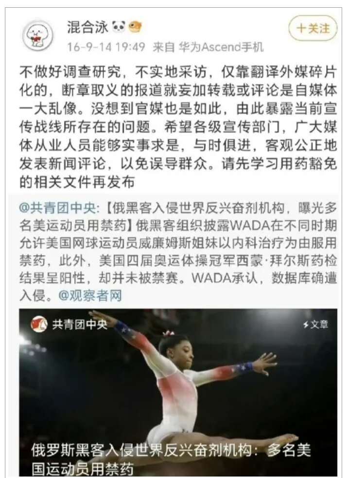

据中国体育报今日消息，8月6日，国家体育总局有关负责人对记者表示，近日网上出现质疑国家体育总局下属单位干部袁某某通过个人社交媒体发布不当言论的信息。国家体育总局已关注到相关情况，并立即开始调查处理。
网络空间不是法外之地。国家体育总局坚决落实全面从严治党部署，严格管理监督党员干部言行，严肃查处违规违纪违法行为，绝不姑息。感谢广大网友对体育的关注支持，为中国体育代表团征战巴黎奥运会营造良好的舆论环境。我们将全力以赴打好后面的比赛，做好相关工作。
相关报道：
最可恨的，是“袁主任”这种双面人
自从见识了“袁主任”这号双面人，现在觉得孙杨很有可能就是被类双面人陷害、毁掉的。
无论从历史还是现实看，中国运动员都不应该成为被世界反兴奋剂组织集火针对的对象，因为兴奋剂不是中国发明的，也不是中国滥用的，兴奋剂的始作俑者是美国，世界上最滥用药物的国家也是美国，全球各种职业联赛检测兴奋剂最少的也是美国，拥有全世界最多“用药豁免权”的还是美国。
孙杨的药检次数是菲尔普斯的15倍，创造的奇迹远不如菲尔普斯，为什么他们不质疑菲尔普斯，却要质疑孙杨？
为什么反兴奋剂不针对美国，反而针对中国？
某些国内的“反兴奋剂组织官员”，扮演了什么角色？


世界反兴奋剂组织主席班卡前几天就说：
“美国反兴奋剂机构对运动员检测不同于世界反兴奋剂机构标准，90%美国运动员没有得到及时检测，包括NCAA运动员”。现在欧洲、非洲和亚洲联合起来向世界反兴奋剂机构施压，质问为什么美国运动员和NCAA不受世界反兴奋剂机构规则制约？
美国90%的运动员是不接受WADA 的监管，平日里是美国USADA自己检测，虽然只有参加奥运的美国运动员才接受WADA监管，但检测次数远远不足，参赛前得到的数据居然是一个月前的。
即使WADA对美国包容成这样，美国都和WADA爆发了严重冲突，认为该组织偏袒中国。威胁撤掉对WADA资助款项（美国是WADA大金主）的同时，FBI还传唤世界泳联执行董事。
根据美国2020年全票通过的《罗琴科夫反兴奋剂法案》，美国自认为有权审查并逮捕一切有美国运动员参与比赛的选手，甚至跨境执法。最高可以对涉嫌兴奋剂的外籍运动员最高监禁10年罚款100万美元……
美国对中国游泳运动员的迫害，主要分“三步走”，一是针对中国游泳运动员开展超密集的兴奋剂检测，以干扰和影响中国游泳运动员的休息、训练。一旦中国游泳运动员表示反对或情绪失控，立即如之前迫害孙杨那样立即予以禁赛；二是美国通过其操控的国际舆论对中国游泳运动员、中国游泳进行疯狂的造谣、污蔑和攻击，把中国游泳和服用兴奋剂划等号；三是美国通过国内法的“长臂管辖霸权”，公然威胁要逮捕中国游泳名将。
中国游泳队在巴黎期间经历了极为严格的兴奋剂检测，每位选手在赛前两个月内大约接受了20至30次检查，而美国和澳大利亚的选手们，他们的人均检测次数分别只有6次和4次。
美国600多名运动员全都有哮喘病、多动症、抑郁症，400多人可以“豁免”过审、“持证吃药”，为什么就从来没有哪个国际组织、主流媒体公开揭露指责过？
当潘打破世界纪录时，“围剿”就开始了，得了银牌的美国人查尔莫斯在ins发完合照，转头就点赞造谣潘展乐使用兴奋剂的帖子。美国NBC转播比赛时把潘展乐夺冠后的视频掐了。德国电视台不播潘展乐夺冠，改为播放一个抹黑中国游泳队使用兴奋剂的视频。
在这个时候，袁主任阴阳怪气发了一句：“还能说什么呢？人类奇迹了吧？”
当网友质疑美国游泳队比赛后一个个紫红色猪肝脸的时候，袁主任又第一个跳出来给美国堆洗地，指责网友们“反智”……这反应速度、这立场，非常鲜明了。


袁主任这几天在疯狂删除他之前的微博，因为他发的那些东西，比殖人还“殖”，比公知恨国党更无耻下作，无论那一条，都是见不得光的。


现在回想一下孙杨事件，他更像是被“联合围猎”了，有人利用了“程序”和“规则”，利用了孙杨本人的情绪问题，制造了一次策划周密、层层叠进的陷阱，第一时间组织了媒体疯狂围剿、扣帽子抹黑陷害，而我们的某些人一点都没有帮助和保护我们的功勋运动员，甚至里应外合、联手做局，摧毁了一颗如日中天、足以打击欧美“种族优越”的游泳巨星。
一直是这样的，只要我们中间出现“标杆式的人物”，就会立刻被它们盯上，使用各种手段进行丑化污蔑，有预谋有组织有经费，煽动乌合之众围剿，对其进行“定点清除”，等到大众回过味来，这个人已经被毁了！
结合这几天“袁主任”的发言和表现，我越来越相信，这件事是真的。